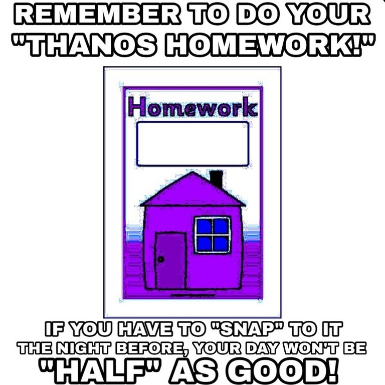

Our Mission:
Memes everywhere are dying. Through overuse, they have deteriorated into husks of their former glory. The Meme Revival Organization is dedicated to saving threatened and endangered memes around the globe, and to stop the widespread exploitation of memes by irresponsible children and old people out-of-touch with the internet.
 Here is a clear example of meme abuse. The United States public education system is one of the most infamous perpetrators of this. Teachers will frequently illegally catch memes and use them irresponsibly, causing them to die an untimely death. As a result of memes like the one to the left, Thanos, once thought to be a non-threatened meme, has become endangered. This story is not unique to him, however. Nearly all memes are under threat. Take the meme to the right, for example. This is a blatantly obvious form of meme abuse and mutilation. Memes do not need to suffer like this.What You Can Do:
There are many ways of supporting our cause. Donate your VBucks with the link above, or send us your Thanos Car as a tax-deductible donation. You can also use memes RESPONSIBLY, taking time to research sustainable meme-ing techniques. Protest against those who take advantage of poor, innocent memes. There is NO excuse for this horrific treatment of memes. They deserve better, so please, join our cause today.